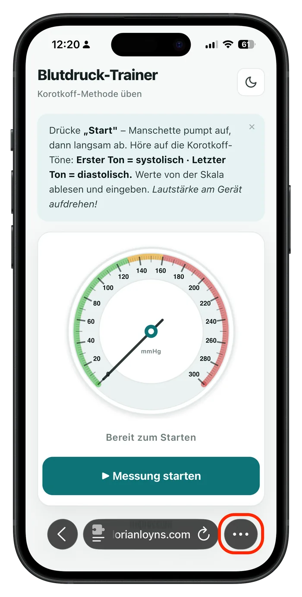
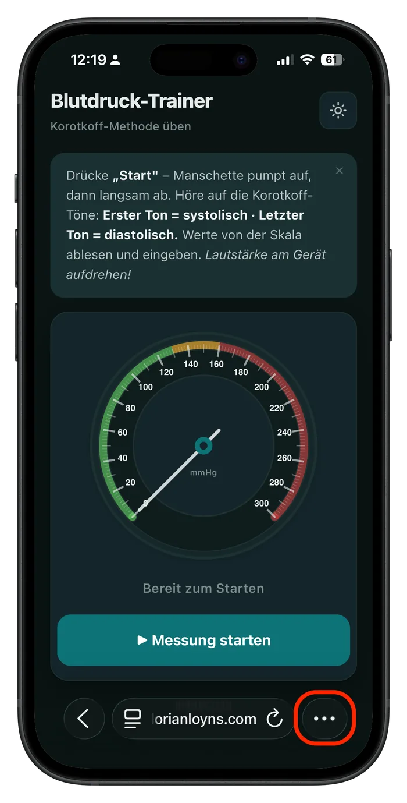
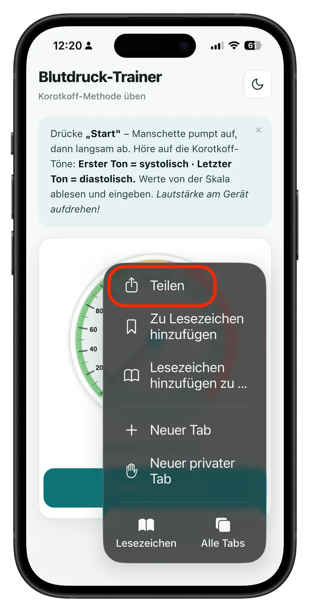
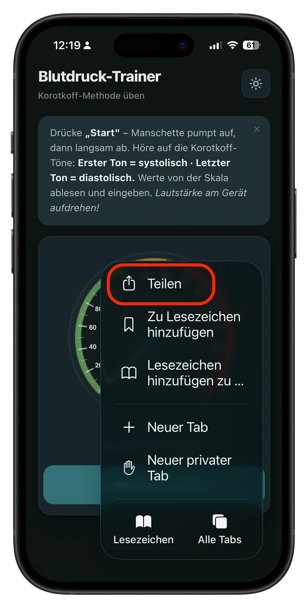
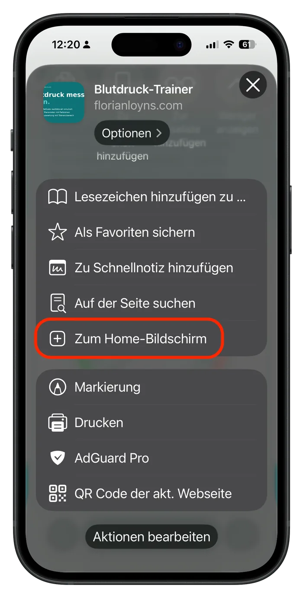
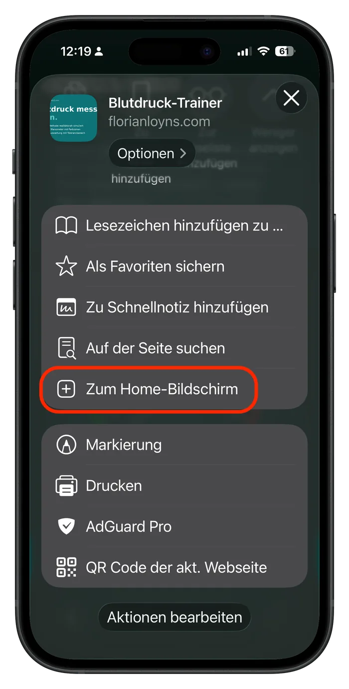
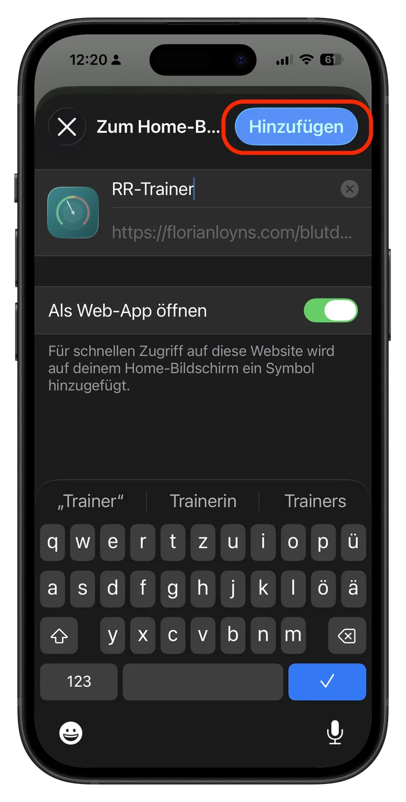
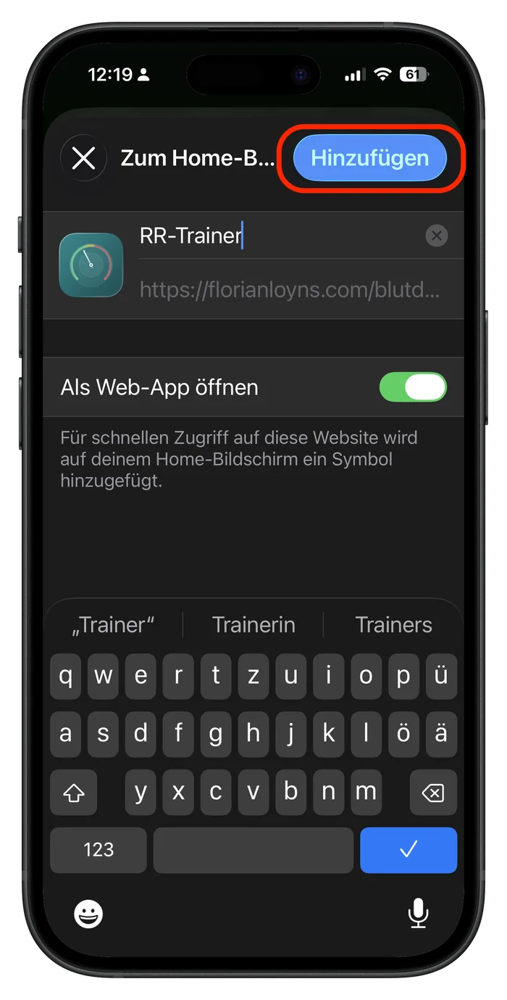

Warum gibt es das hier? Ich unterrichte als Lehrer für Pflegeberufe in der generalistischen Pflegeausbildung und baue die Werkzeuge, die mir im Unterricht selbst gefehlt haben. Jedes entsteht aus einer konkreten Situation im Klassenzimmer. Alle bleiben kostenfrei und offen – weil gute Didaktik möglichst viele Lernende erreichen sollte.
Was hier landet, kommt aus der Praxis: Jede Anwendung verbindet eine didaktische Idee mit ihrer technischen Umsetzung – beides aus einer Hand. Alles läuft direkt im Browser ohne Anmeldung, ohne Tracking, ohne externe Server – auch offline auf jedem Schulrechner und Smartphone.
Die Tests sind Reflexionsimpulse, keine Diagnostik. Die Werkzeuge ersetzen keine Pädagogik, sie beschleunigen sie. Feedback, Fehlerhinweise und Vorschläge sind willkommen – gern per Mail oder als Issue auf GitHub.
Florian Loyns · Lehrer für Pflegeberufe
Klinische Situationen üben
Fallbasierte Szenarien mit Sofort-Feedback – für klinisches Denken, Kommunikation und Stationsalltag. Alle als App auf dem Handy installierbar.
Klinisches Urteilen trainieren
Fallbasiertes Üben vom Situationsverständnis bis zur Pflegeplanung – strukturiert statt auswendig pauken. Als App auf dem Handy installierbar.
- Fallbasiert statt Lehrbuch
- Von Einschätzung bis zur Pflegeplanung
Die Übergabe strukturiert üben
SBAR, ISBAR oder ISOBAR – wähle dein Schema und übe an drei Alltagsszenarien. Mit Musterübergabe am Ende.
- SBAR, ISBAR oder ISOBAR zur Wahl
- Drei praxisnahe Szenarien
Validation im Alltag trainieren
12 Szenarien aus dem Umgang mit Menschen mit Demenz – sagbare Sätze plus passende Handlung.
- 12 praxisnahe Szenarien
- Sprache und Handlung parallel
Habt ihr noch ein Bett?
Endlos-Quiz zur Bettenzuweisung – Iso-Regeln, Kohorten, Geschlechtertrennung. Schicht starten, unter Zeitdruck richtig entscheiden, Highscore knacken.
- Endlos-Modus mit XP-Stufen
- Iso, 3MRGN/4MRGN, psychosozial
Schmerz-Trainer
Drei Module in einer App: Schmerzskalen (NRS, VAS, BESD, KUSS …), OPQRST-Anamnese und WHO-Stufenschema. Mit Lern-, Test- und Probieren-Modus – die Skalen am Patientenbett direkt anwenden.
- 6 Skalen, 6 Buchstaben, 4 Stufen
- 34 Fallbeispiele aus der Pflegepraxis
Blutdruck messen üben
Animiertes Manometer mit Korotkoff-Tönen – Nadel von der Skala ablesen statt digital anzeigen. Sofortige Auswertung mit Toleranzbereich ±8 mmHg.
- Korotkoff-Methode realitätsnah simuliert
- 26 rotierende Blutdruckwerte
Wissen & Reflexion
Begriffe festigen, Strukturen verstehen, das eigene Lernen reflektieren – ohne Zeitdruck, im eigenen Tempo.
Pflegelatein
Karteibox mit über 600 Begriffen aus Anatomie, Pathologie und Pflegepraxis. Was du weißt, kommt seltener wieder; was wackelt, ist morgen wieder dran.
- Leitner-System mit 5 Lernfächern
- Latein → Deutsch und umgekehrt
Sozialversicherungs-Trainer
Die fünf Säulen der Sozialversicherung als interaktive Tempel-Architektur erkunden – plus Übungs-Modus mit 15 Stolperfallen-Szenarien für die Examensvorbereitung.
- Lern- und Übungs-Modus mit drei Schwierigkeitsstufen
- 15 prüfungsrelevante Praxis-Szenarien
Das eigene Hören reflektieren
Das 4-Ohren-Modell nach Schulz von Thun in 12 Alltagssituationen – zeigt dein lautestes und dein leisestes Ohr.
- 12 Szenen aus Schule und Praxis
- Dominantes und leisestes Ohr
Den eigenen Lerntyp finden
12 Fragen zu auditiv, visuell, kommunikativ und kinästhetisch – mit wissenschaftlicher Auflösung am Ende.
- 12 Fragen in ca. 2 Minuten
- Vier Lernkanäle im Überblick
Rechner
Live-Rechner für typische Berechnungen in der Pflegeausbildung – Werte einstellen, Ergebnis und Rechenweg sofort sichtbar.
Pflegegrad-Rechner
Sechs NBA-Module bewerten, Pflegegrad und Pflegegeld live mitsehen. Mit offiziellem SGB-XI-Wortlaut und den Sondergewichtungen in Modul 4.
- Sechs Module nach Anlage 1 zu § 15 SGB XI
- Live-Pflegegrad mit Pflegegeld-Betrag
Infusionsrechner
Tropfenrate, Laufzeit oder Volumen einer Schwerkraft-Infusion. Werte einstellen, Ergebnis und Rechenweg live mitsehen.
- Drei Modi nach derselben Formel
- Makro- und Mikrotropfsystem mit Live-Visualisierung
BMI & Tagesbedarf
Body-Mass-Index, Grundumsatz und Tagesbedarf nach Mifflin-St Jeor und DGE-PAL. Werte einstellen, Rechenweg live.
- WHO-BMI-Skala mit beweglichem Marker
- Grundumsatz nach Mifflin-St Jeor (1990)
So installierst du die Apps auf dem Handy
Alle Trainings, Selbsttests und Rechner lassen sich auf jedem Smartphone wie eine App installieren – direkt aus dem Browser, ohne App Store, ohne Anmeldung. Einmal eingerichtet, läuft die App auch offline.
Auf iOS installieren
- Tool im Safari-Browser öffnen
- Auf das Drei-Punkte-Menü unten rechts tippen
- Nach unten scrollen, „Zum Home-Bildschirm“ wählen
- Namen bestätigen – fertig
Auf Android installieren
- Tool im Chrome-Browser öffnen
- Auf das Drei-Punkte-Menü oben rechts tippen
- „App installieren“ oder „Zum Startbildschirm hinzufügen“ wählen
- Bestätigen – fertig


Schritt 1 Safari-Browser öffnen

Schritt 2 Drei-Punkte-Menü tippen

Schritt 3 Zum Home-Bildschirm

Schritt 4 Namen bestätigen – fertigWerkzeuge
Browser-Werkzeuge für typische Aufgaben im Pflegeunterricht – ohne Installation, offline nutzbar.
Lerngruppen klug einteilen
Vier Einteilungsmethoden mit Drag-and-Drop-Nachbearbeitung – inklusive Word- und PDF-Export.
- Vier Einteilungsmethoden
- Drag-and-Drop-Nachbearbeitung
- Word- und PDF-Export
Arbeitsaufträge strukturieren
Evidenzbasierte Vorlagen nach Hattie und Bloom – mit Operatoren-Bibliothek und Word-Export.
- Struktur nach Hattie und Bloom
- Operatoren-Bibliothek
- Word-Export, offline nutzbar
OSCE-Prüfungen planen
Rotationspläne mit automatischer Logik, editierbaren Pausenzeiten und drei fertigen Word-Exporten.
- Automatische Rotationslogik
- Editierbare Pausenzeiten
- Drei Word-Exporte
Reveal-Plugins
reveal.js ist ein freies, browserbasiertes Präsentations-Framework – Folien laufen auf jedem Rechner, Beamer oder Smartboard, ohne Installation und offline. Meine Plugins erweitern es gezielt für den Unterricht: mit dem Finger am Touch-Display bedienbar und auf interaktives Lehren ausgelegt. Hier in der Reihenfolge einer Unterrichtsstunde: Bedienung und Zeit, Einstieg, Fachbegriffe, Bildbeschriftung, Textarbeit, Abläufe, Übung und Abschluss.
Präsentationen am Smartboard bedienen
Bildschirm-Bedienleiste für reveal.js: mit dem Stift markieren, ein Whiteboard öffnen, in eine Stelle zoomen, einen Timer für die Gruppenarbeit starten, Pause, Übersicht und Vollbild – ganz ohne Tastatur oder Maus.
- Stift, Whiteboard, Lupe, Timer, Pause, Übersicht, Vollbild
- Für Touch-Display und Smartboard gebaut
Wortwolke als Advance Organizer
Zeigt die Schlüsselbegriffe eines Themas auf einen Blick – ideal zum Einstieg, um Vorwissen zu aktivieren. Ein Wort antippen holt es in den Fokus. Begriffe als einfache Liste, die Zahl bestimmt die Größe.
- Dichte Wortwolke, in deinem Stil einfärbbar
- Mit dem Finger am Smartboard bedienbar
Fachbegriffe auf Folien erklären
Fachbegriffe auf den Folien markieren – bei Hover oder Tipp erscheint eine kurze Erklärung direkt am Wort. Auch Lernende können zuhause darauf klicken.
- Erklärung direkt am Begriff
- Hover am Laptop, Tipp am Board
Bilder direkt auf der Folie beschriften
Kleine Marker sitzen auf dem Bild; ein Tipp öffnet Name und Erklärung daneben, der nächste schließt sie wieder. Für Anatomie, Wunden oder Geräte – am Smartboard antippen statt danebenschreiben. Im Ausdruck wird eine nummerierte Lehrbuchseite daraus.
- Marker per Prozent gesetzt – nichts verrutscht
- Vollbild und Druck mit nummerierter Legende
Zitate Satz für Satz erschließen
Lange Zitate und Quellentexte nicht auf einmal hinstellen, sondern schrittweise entwickeln – so liest die Klasse die Zeile, über die gerade gesprochen wird. Den Text schreibst du normal, das Plugin zerlegt ihn selbst in Sätze.
- Aufbauen – oder nur den aktuellen Satz hervorheben
- Kennt z. B., d. h., Dr. und Ordnungszahlen
Abläufe Schritt für Schritt zeigen
Eine Pflegemaßnahme nicht als Aufzählung hinstellen, sondern Schritt für Schritt gehen – der ganze Weg bleibt als Leiste sichtbar, gezeigt wird nur der Schritt, über den gerade gesprochen wird. Die Begründung eines Schritts bleibt bis zum Antippen verdeckt, damit die Klasse sie erst selbst nennen kann.
- Mit Zeitangaben wird aus der Leiste ein maßstabsgetreuer Zeitstrahl
- Einmal schreiben, als Reihenfolge-Aufgabe prüfen
Interaktive Aufgaben auf Folien
Vier Aufgabentypen für reveal.js: Single-Choice, Mehrfachauswahl, Wahr/Falsch und Reihenfolge. Rückmeldung über Farbe, mit dem Finger lösbar – Lernende können die Aufgaben auch zuhause wiederholen.
- Single-Choice, Mehrfachauswahl, Wahr/Falsch, Reihenfolge
- Am Touch-Display und Smartboard bedienbar
Punktetafel-Quiz zum Abschluss
Ein Spielbrett aus Kategorien und Punktwerten: Feld antippen, die Frage füllt die Folie, Antwort aufdecken – die große Gesamtwiederholung zum Reihum-Fragen am Smartboard. Beim Drucken oder als PDF wird daraus automatisch ein Frage-Antwort-Arbeitsblatt.
- Kategorien × Punkte, Feld antippen für die Frage
- Am Touch-Display und Smartboard bedienbar